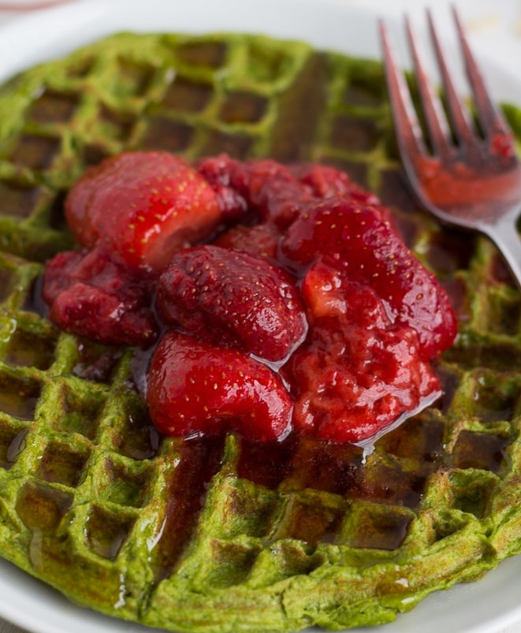

Easy Eatz! Recipes !

Spinach Protein Waffles
Nutrition Information Serving size: 1 waffle Calories: 217 Fat: 7 g Saturated fat: 2 g Unsaturated fat: 4 g Trans fat: 0 g Carbohydrates: 22 g Sugar: 4 g Sodium: 121 mg Fiber: 3 g Protein: 18 g Cholesterol: 191 mg
|15 minutes| 224 cal|
This batter couldn’t be easier to put together. All you gotta do is blend up spinach, oats, Greek yogurt, and egg and some stevia and you have yourself a real treat. Plus, you can’t really ever complain about a recipe that hides veggies!..
Ingredients:
1 large egg
1/3 cup non-fat plain greek yogurt)
1/3 cup oats
1/2 packet stevia
1 handful of spanich

Instructions:
Plug in waffle iron and turn on. Blend all ingredients together. When waffle iron is ready, pour all batter into the iron and close. Cook until no longer steaming (5 minutes or so). Waffle will be slightly golden brown. Add fruits ontop to add more flavor if you want.